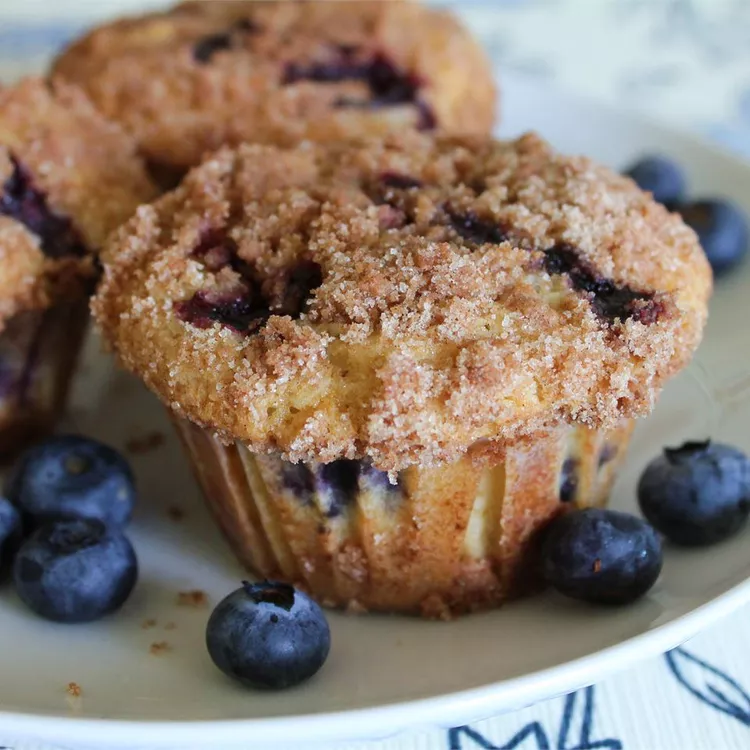

Blueberry Muffin

Description
This blueberry muffin recipe is moist, sweet, and bursting with fruity flavor. A buttery streusel topping takes this indulgent breakfast over the top.
Ingredients
- Muffins: all-purpose flour, white sugar, baking powder, salt, vegetable oil, an egg, milk, and fresh blueberries
- Toppings: white sugar, all-purpose flour, butter, and cinnamon
Steps
- Mix the dry ingredients in one bowl.
- Mix the wet ingredients in a liquid measuring cup.
- Add the wet mixture to the dry mixture, then fold in the blueberries.
- Make the topping.
- Pour the batter into a prepared muffin tin and sprinkle with the topping.
- Bake in the preheated oven until the toothpick comes out clean.